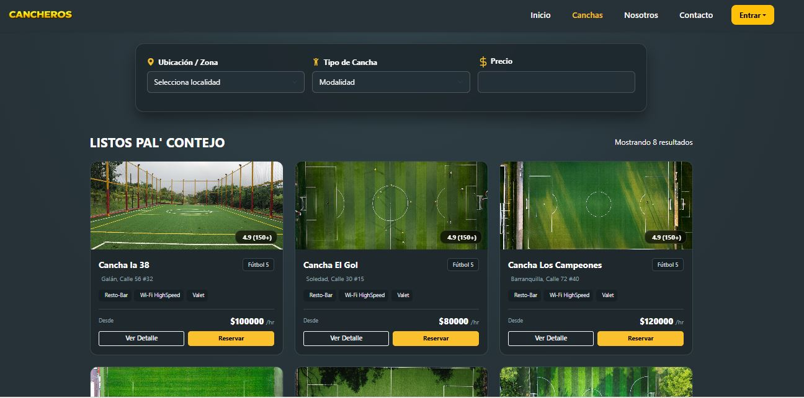
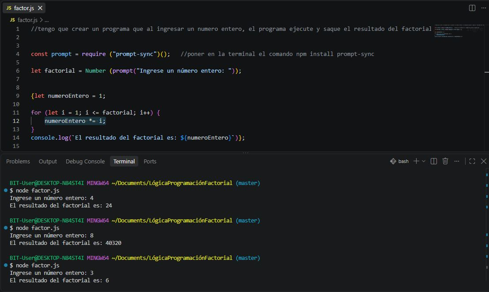

Proyectos

Cancheros
Aplicación web para la reserva de canchas sintéticas de fútbol.
Problema
Facilitar la reserva de canchas sintéticas de fútbol para que sea de manera rápida y sencilla.
Rol y decisiones
Participación en diferentes etapas del desarrollo, apoyando la construcción de interfaces, estilos, funcionalidades, navegación y diseño responsive.
Tecnologías
Resultado
Una aplicación web funcional para la reserva de canchas, incorporando funcionalidades de usuarios, disponibilidad y reservas.

Cálculo de Factorial
Ejercicio de lógica de programación que calcula el factorial de números enteros.
Problema
Facilitar el cálculo del factorial de los números enteros.
Rol y decisiones
Aplicación de variables, conversión de datos, entrada de información mediante prompt-sync y un ciclo for para realizar el cálculo del factorial.
Tecnologías
Resultado
Programa funcional que calcula y muestra el factorial de un número entero ingresado por el usuario.
MALA - Cocina de Chengdu
Sitio web para realizar pedidos de comida china (Hackathon).
Problema
Desarrollar una página web intuitiva de un restaurante para que los usuarios revisen el menú digitalmente y realicen los pedidos.
Rol y decisiones
Participación colaborativa del proyecto, principalmente de la sección del menú, buscando que el catálogo fuera claro, atractivo y fácil de consultar.
Tecnologías
Resultado
Interfaz web responsive con catálogo de productos y una experiencia visual que facilita la consulta del menú.